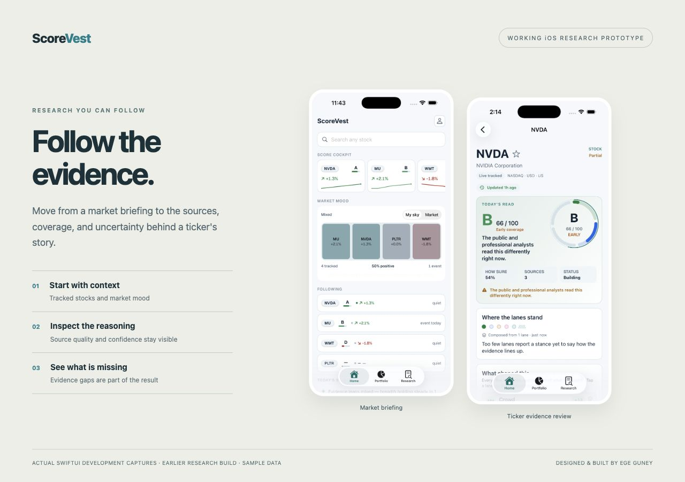
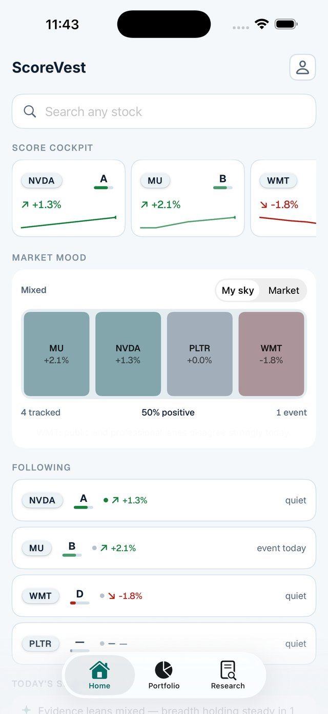

01 · Financial research · Case study
ScoreVest
Investment research with evidence you can follow. ScoreVest moves from a market briefing to the sources, coverage and uncertainty behind a ticker's story, so a conclusion never arrives without its reasoning.

What it does
- Start with context. Tracked stocks and market mood in one briefing.
- Inspect the reasoning. Source quality and confidence stay visible next to every claim.
- See what is missing. Evidence gaps are part of the result, not hidden behind it.
- Test it honestly. Reproducible simulations account for trading costs and guard against future information leaking into historical results.
Project facts
- Stack
- Java / Spring Boot · PostgreSQL · SwiftUI
- Platform
- Native iOS research prototype
- Analytics
- Cited market discussion, sentiment, risk and return, cost-aware paper simulations
- Data
- Sample development data; no personal holdings or verified performance claims
- Source
- Private; captures shown here are from an earlier working build
Original iOS captures
From the working build


Actual SwiftUI development captures from an earlier working research build. Market figures are sample development data.